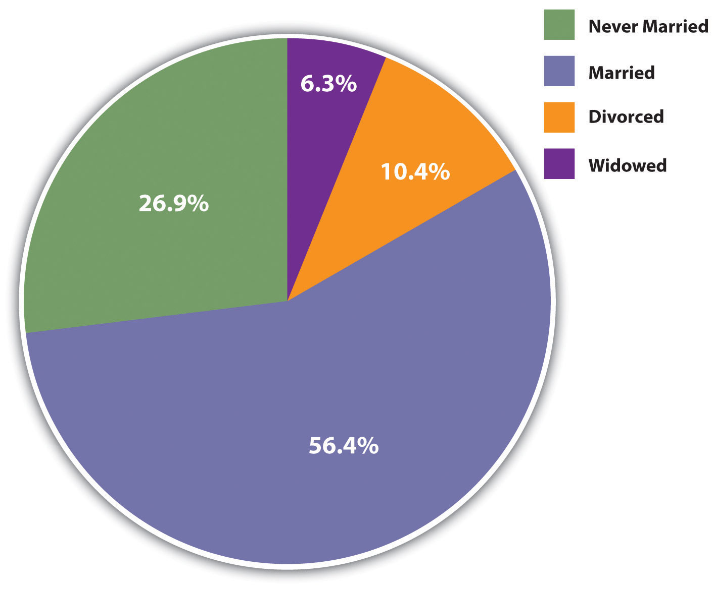
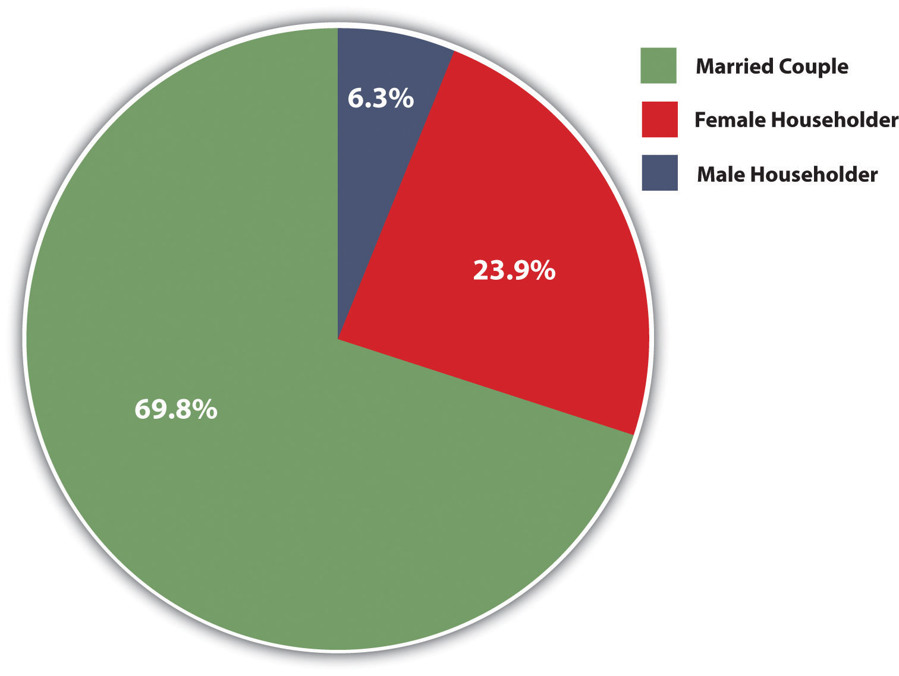
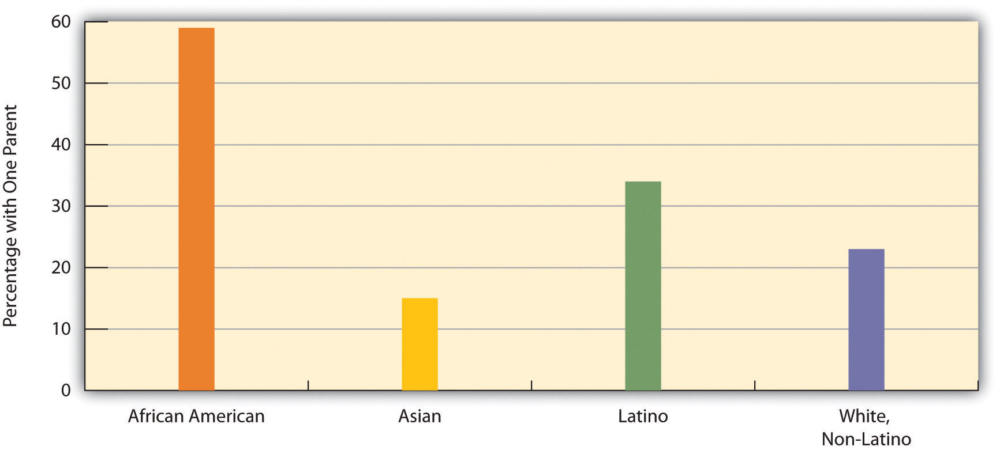

A familyA group of two or more people who are related by blood, marriage, adoption, or a mutual commitment and who care for one another. is a group of two or more people who are related by blood, marriage, adoption, or a mutual commitment and who care for one another. Defined in this way, the family is universal or nearly universal: Some form of the family has existed in every society, or nearly every society, that we know about (Starbuck, 2010).Starbuck, G. H. (2010). Families in context (2nd ed.). Boulder, CO: Paradigm. Yet it is also true that many types of families have existed, and the cross-cultural and historical record indicates that these different forms of the family can all “work”: They provide practical and emotional support for their members and they socialize their children.
It is important to keep this last statement in mind, because Americans until the last few decades thought of only one type of family, and that is the nuclear familyA family composed of two parents and their children living in the same household.: A married heterosexual couple and their young children living by themselves under one roof. The nuclear family has existed in most societies with which scholars are familiar. An extended familyA family in which parents, children, and other relatives live in the same household., which consists of parents, their children, and other relatives, has a nuclear family at its core and was quite common in prehistoric societies. Many one-parent families begin as (two-parent) nuclear families that dissolve upon divorce or separation or, more rarely, the death of one of the parents. In recent decades, one-parent families have become more common in the United States because of divorce and births out of wedlock, but they were actually very common throughout most of human history because many spouses died early in life and because many babies were born out of wedlock.
Although many prehistoric societies featured nuclear families, a few societies studied by anthropologists have not had them. In these societies, a father does not live with a woman after she has his child and sees them either irregularly or not at all. Despite the absence of a father and the lack of a nuclear family, this type of family arrangement seems to have worked well in these societies. In particular, children are cared for and grow up to be productive members of their societies (Smith, 1996).Smith, R. T. (1996). The matrifocal family: Power, pluralism, and politics. New York, NY: Routledge.
These examples do not invalidate the fact that nuclear families are almost universal. But they do indicate that the functions of the nuclear family can be achieved through other family arrangements. If that is true, perhaps the oft-cited concern over the “breakdown” of the 1950s-style nuclear family in modern America is at least somewhat undeserved. As indicated by the examples just given, children can and do thrive without two parents. To say this is meant neither to extol divorce, births out of wedlock, and fatherless families nor to minimize the problems they may involve. Rather, it is meant simply to indicate that the nuclear family is not the only viable form of family organization (Seccombe, 2012).Seccombe, K. (2012). Families and their social worlds (2nd ed.). Upper Saddle River, NJ: Pearson.
In fact, although nuclear families remain the norm in most societies, in practice they are something of a historical rarity: Until about a century ago, many spouses died by their mid-forties, and many babies were born out of wedlock. In medieval Europe, for example, people died early from disease, malnutrition, and other problems. One consequence of early mortality was that many children could expect to outlive at least one of their parents and thus essentially were raised in one-parent families or in stepfamilies (Gottlieb, 1993).Gottlieb, B. (1993). The family in the Western world from the black death to the industrial age. New York, NY: Oxford University Press.
During the American colonial period, different family types abounded, and the nuclear family was by no means the only type (Coontz, 1995).Coontz, S. (1995, summer). The way we weren’t: The myth and reality of the “traditional” family. National Forum: The Phi Kappa Phi Journal, 11–14. Nomadic Native American groups had relatively small nuclear families, while nonnomadic groups had larger extended families. Because nuclear families among African Americans slaves were difficult to achieve, slaves adapted by developing extended families, adopting orphans, and taking in other people not related by blood or marriage. Many European parents of colonial children died because average life expectancy was only 45 years. The one-third to one-half of children who outlived at least one of their parents lived in stepfamilies or with just their surviving parent. Mothers were so busy working the land and doing other tasks that they devoted relatively little time to child care, which instead was entrusted to older children or servants.
Moving much forward in US history, an important change in American families occurred during the 1940s after World War II ended. As men came home after serving in the military in Europe and Japan, books, magazines, and newspapers exhorted women to have babies, and babies they did have: People got married at younger ages and the birth rate soared, resulting in the now famous baby boom generation. Meanwhile, divorce rates dropped. The national economy thrived as auto and other factory jobs multiplied, and many families for the first time could dream of owning their own homes. Suburbs sprang up, and many families moved to them. Many families during the 1950s did indeed fit the Leave It to Beaver model of the breadwinner-homemaker suburban nuclear family. Following the Depression of the 1930s and the war of the 1940s, the 1950s seemed an almost idyllic decade.
Even so, less than 60 percent of American children during the 1950s lived in breadwinner-homemaker nuclear families. Moreover, many lived in poverty, as the poverty rate then was almost twice as high as it is today. Teenage pregnancy rates were about twice as high as today. Although not publicized back then, alcoholism and violence in families were common. Historians have found that many women in this era were unhappy with their homemaker roles, Mrs. Cleaver (Beaver’s mother) to the contrary, suffering from what Betty Friedan (1963)Friedan, B. (1963). The feminine mystique. New York, NY: W. W. Norton. famously called the “feminine mystique.”
During the 1960s and 1970s, women began to enter the labor force. They did so to increase their families’ incomes and to achieve greater self-fulfillment. More than 60 percent of married women with children under 6 years of age are now in the labor force, compared to less than 19 percent in 1960. At about the same time, divorce rates increased for several reasons that we examine later in this chapter. Changes in the American family had begun, and along with them various controversies and problems.
In the United States today, marriage remains an important institution. Only about 27 percent of all adults (18 or older) have never been married, 56 percent are currently married, 10 percent are divorced, and 6 percent are widowed (see Figure 10.1 "Marital Status of the US Population 18 Years of Age or Older, 2010"). Thus 72 percent of American adults have been married, whether or not they are currently married. Because more than half of the never-married people are under 30, it is fair to say that many of them will be getting married sometime in the future. When we look just at people aged 45–54, about 87 percent are currently married or had been married at some point in their lives. In a 2010 poll, only 5 percent of Americans under age 30 said they did not want to get married (Luscombe, 2010).Luscombe, B. (2010, November 18). Who needs marriage? A changing institution. Time. Retrieved from http://www.time.com/time/magazine/article/0,9171,2032116,2032100.html. These figures all indicate that marriage continues to be an important ideal in American life, even if not all marriages succeed. As one sociologist has said, “Getting married is a way to show family and friends that you have a successful personal life. It’s like the ultimate merit badge” (Luscombe, 2010).Luscombe, B. (2010, November 18). Who needs marriage? A changing institution. Time. Retrieved from http://www.time.com/time/magazine/article/0,9171,2032116,2032100.html.
Although marriage remains an important institution, two recent trends do suggest that its importance is declining for some segments of the population (Cohn, Passel, Wang, & Livingston, 2011).Cohn, D., Passel J., Wang, W., & Livingston, G. (2011). Barely half of US adults are married—a record low. Washington, DC: Pew Research Center. First, although 71 percent of adults have been married, this figure represents a drop from 85 percent in 1960. Second, education greatly affects whether we marry and stay married, and marriage is less common among people without a college degree.
Figure 10.1 Marital Status of the US Population 18 Years of Age or Older, 2010
Source: Data from US Census Bureau. (2012). Statistical abstract of the United States: 2012. Washington, DC: US Government Printing Office. Retrieved from http://www.census.gov/compendia/statab.
Recent figures provide striking evidence of this relationship. Almost two-thirds (64 percent) of college graduates are currently married, compared to less than half (47 percent) of high school graduates and high school dropouts combined. People with no more than a high school degree are less likely than college graduates to marry at all, and they are more likely to get divorced, as we shall discuss again later, if they do marry.
This difference in marriage rates worsens the financial situation that people with lower education already face. As one observer noted, “As marriage increasingly becomes a phenomenon of the better-off and better-educated, the incomes of two-earner married couples diverge more from those of struggling single adults” (Marcus, 2011).Marcus, R. (2011, December 18). The marriage gap presents a real cost. The Washington Post. Retrieved from http://www.washingtonpost.com/opinions/the-marriage-gap-presents-a-real-cost/2011/12/16/gIQAz24DzO_story.html?hpid=z3. One of the many consequences of this education gap in marriage is that the children of one-parent households are less likely than those of two-parent households to graduate high school and to attend college. In this manner, a parent’s low education helps to perpetuate low education among the parent’s children.
In several ways, the United States differs from other Western democracies in its view of marriage and in its behavior involving marriage and other intimate relationships (Cherlin, 2010; Hull, Meier, & Ortyl, 2012).Cherlin, A. J. (2010). The marriage-go-round: The state of marriage and the family in America today. New York, NY: Vintage; Hull, K. E., Meier, A., & Ortyl, T. (2012). The changing landscape of love and marriage. In D. Hartmann & C. Uggen (Eds.), The contexts reader (2nd ed., pp. 56–63). New York, NY: W. W. Norton. First, Americans place more emphasis than their Western counterparts on the ideal of romantic love as a basis for marriage and other intimate relationships and on the cultural importance of marriage. Second, the United States has higher rates of marriage than other Western nations. Third, the United States also has higher rates of divorce than other Western nations; for example, 42 percent of American marriages end in divorce after fifteen years, compared to only 8 percent in Italy and Spain. Fourth, Americans are much more likely than other Western citizens to remarry once they are divorced, to cohabit in short-term relationships, and, in general, to move from one intimate relationship to another, a practice called serial monogamy. This practice leads to instability that can have negative impacts on any children that may be involved and also on the adults involved.
The US emphasis on romantic love helps account for its high rates of marriage, divorce, and serial monogamy. It leads people to want to be in an intimate relationship, marital or cohabiting. Then when couples get married because they are in love, many quickly find that passionate romantic love can quickly fade; because their expectations of romantic love were so high, they become more disenchanted once this happens and unhappy in their marriage. As sociologist Andrew J. Cherlin (2010, p. 4)Cherlin, A. J. (2010). The marriage-go-round: The state of marriage and the family in America today. New York, NY: Vintage observes, “Americans are conflicted about lifelong marriage: they value the stability and security of marriage, but they tend to believe that individuals who are unhappy with their marriages should be allowed to end them.” Still, the ideal of romantic love persists even after divorce, leading to remarriage and/or other intimate relationships.
The United States has about 36 million families with children under 18. About 70 percent of these are married-couple families, while 30 percent (up from about 14 percent in the 1950s) are one-parent families. Most of these latter families are headed by the mother (see Figure 10.2 "Family Households with Children under 18 Years of Age, 2010").
Figure 10.2 Family Households with Children under 18 Years of Age, 2010
Source: Data from US Census Bureau. (2012). Statistical abstract of the United States: 2012. Washington, DC: US Government Printing Office. Retrieved from http://www.census.gov/compendia/statab.
The proportion of families with children under 18 that have only one parent varies significantly by race and ethnicity: Latino and African American families are more likely than white and Asian American households to have only one parent (see Figure 10.3 "Race, Ethnicity, and Percentage of Family Groups with Only One Parent, 2010"). Similarly, whereas 30 percent of all children do not live with both their biological parents, this figure, too, varies by race and ethnicity: about 61 percent of African American children, 15 percent of Asian children, 33 percent of Latino children, and 23 percent of non-Latino white children.
Figure 10.3 Race, Ethnicity, and Percentage of Family Groups with Only One Parent, 2010
Source: Data from US Census Bureau. (2012). Statistical abstract of the United States: 2012. Washington, DC: US Government Printing Office. Retrieved from http://www.census.gov/compendia/statab.
We will discuss several other issues affecting children later in this chapter. But before we move on, it is worth noting that children, despite all the joy and fulfillment they so often bring to parents, also tend to reduce parents’ emotional well-being. As a recent review summarized the evidence, “Parents in the United States experience depression and emotional distress more often than their childless adult counterparts. Parents of young children report far more depression, emotional distress and other negative emotions than non-parents, and parents of grown children have no better well-being than adults who never had children” (Simon, 2008, p. 41).Simon, R. W. (2008). The joys of parenthood, reconsidered. Contexts, 7(2), 40–45.
Children have these effects because raising them can be both stressful and expensive. Depending on household income, the average child costs parents between $134,000 and $270,000 from birth until age 18. College education obviously can cost tens of thousands of dollars beyond that. Robin W. Simon (2008)Simon, R. W. (2008). The joys of parenthood, reconsidered. Contexts, 7(2), 40–45. argues that American parents’ stress would be reduced if the government provided better and more affordable day care and after-school options, flexible work schedules, and tax credits for various parenting costs. She also thinks that the expectations Americans have of the joy of parenthood are unrealistically positive and that parental stress would be reduced if expectations became more realistic.